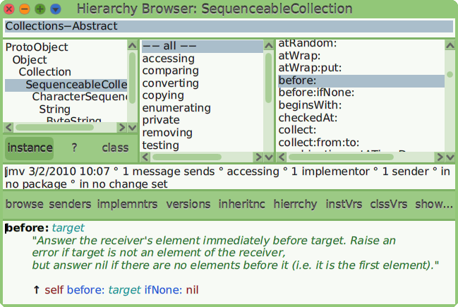

4 The Collection Way of Life
4.1 Kernel-Text
Notably, this category comes with Character, String
and Symbol. String instance are collection of
Character instances.
Character. An individual character is written prefixed with a
“$”: $A. It can be defined with the class side method
numericValue: or converted from an integer instance with the
#asCharacter:
Character numericValue: 65 ⇒ $A
65 asCharacter ⇒ $A
There are class side methods for non printable characters:
Character tab, Character lf, etc.
As string are collection of characters, when enumerating a string we
can use the Character instance methods:
’There are 12 apples.’ select: [:c |c isDigit].
⇒ ’12’
Example 4.1: Twelve apples
Modify Example 4.1 to
reject the numeric characters.
Exercise 4.1: Select apples
String. String is a very large class, it comes with
more than 200 methods. Hopefully the methods are grouped in categories
and it is very easy to experiment from a Workspace when you are
looking for a specific behavior.
Consider you need to search for a string in a string: when browsing
the String class, search for method categories named like
finding... or accessing. There you find a family of
findXXX methods. Read the comments at the beginning of these
methods:
findString: subString
"Answer the index of subString within the receiver, starting at
start. If the receiver does not contain subString, answer 0."
^self findString: subString startingAt: 1.
Or:
findString: key startingAt: start caseSensitive: caseSensitive
"Answer the index in this String at which the substring key first
occurs, at or beyond start. The match can be case-sensitive or
not. If no match is found, zero will be returned."
../..
Then experiment the potentially interesting messages in a workspace:
’I love apples’ findString: ’love’ ⇒ 3 "find at position 3"
’I love apples’ findString: ’hate’
⇒ 0 "no finding"
’We humans, we all love apples’ findString: ’we’
⇒ 12
’We humans, we all love apples’
findString: ’we’
startingAt: 1
caseSensitive: false
⇒ 1
’we humans, we all love apples’ findString: ’we’
⇒ 1
’we humans, we all love apples’ findString: ’we’ startingAt: 2
⇒ 12
Following these paths will, most of the time, leads you to the answer
you are looking for.
We want to format a
string of the form ’Joe bought XX apples and YY oranges’ to the form
’Joe bought 5 apples and 4 oranges’. What message should be used?
Exercise 4.2: Format a string
The String also inherits its behavior from its ancestors,
parent classes. Indeed a String is a subclass of
ArrayedCollection. The direct consequence is that when
searching for some specific behavior, you may need to explore the
parent classes too. The whole behavior of a class, defined in the
class itself and its parents is named its protocol.
Again the browser is helpful to explore a class protocol. You have two
options:
- Explore the protocol. In the class pane of the
browser, do ...select String class →
click the right mouse button → in the menu select
Browse protocol (p)... Alternatively, use the keyboard
shortcut Ctrl-p.
Figure 4.1: Browse String protocol
The new window is a protocol browser for the String
class. At the left, a hierarchy of the String ancestors;
selecting one class there only shows the protocol starting from
this class down to the String class. In the pane at the
right is the list of methods of the selected ancestry. The specific
protocol to String is bold; surrounded by parenthesis, the
class the method is implemented in.
In Figure 4.1, no specific class is selected,
therefore the whole String protocol is listed at the
right. The method before: implemented in
SequenceableCollection is selected and its source code is
displayed on the large bottom pane.
- Explore the hierarchy. In the class pane of the
browser, do ...select String class →
click the right mouse button → in the menu select
Browse hierarchy (h)... Alternatively, use the keyboard
shortcut Ctrl-h or the button hierarchy on the
system browser.

Figure 4.2: Browse the String hierarchy
The hierarchy browser is very like the system browser with only two
differences:
- At the far left, the class categories pane is absent,
- In the classes pane, the hierarchy of String is
printed. It makes easy to browse String parents and
children class.
The hierarchy browser is a general tool for exploration. Contrary to
the protocol browser, it does not display at once the whole protocol
of a class. In ‘ch-browseHierarchy’, the class
SequenceableCollection is selected as well as its method
before:.
This method extracts from a collection the element before a specified
element. When inherited in String, those elements are
Character instances:
Practice the tools and resolve the exercise bellow.
Find the appropriate
method to transform ’Hello My Friend’ in ’My Friend’?
Exercise 4.3: Cut a string
Beware, some messages in the String protocol may obviously not
work. Observe bellow, the error is thrown on a Character
instance:
’Hello My Friend’ cos
⇒ MesageNotUnderstood: Character>>cos
Symbol. A symbol is very like a string but it is unique and
never duplicated. It is written as #hello, and often used
as a constant. You already observe how in the book we noted messages
as symbol, it is because each message is unique. You will use symbol
when you need to name something uniquely.
Observe in the example bellow, the strings are not identical once
duplicated – understand not the same memory location in the computer
– however symbols are identical even when duplicated7:
’hello’ == ’hello’ copy
⇒ false
#hello == #hello copy
⇒ true
Symbols can be written with space:
Symbol with space character,symbolSpace,
#’hello my friend’
’hello my friend’ asSymbol
Symbol is a sub class of String, a lot of its behavior
is inherited. It is helpful to make handy symbol:
’hello my friend’ asCamelCase asSymbol
⇒ #helloMyFriend